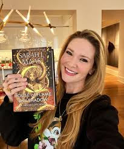

Sarah J. Maas
Romantasy / Fantasy Romance
Her books helped make romantasy one of the biggest genres connected to BookTok.
One trend I noticed is that a lot of the authors who keep showing up in BookTok trends are women. This is especially true in romance, romantasy, thrillers, and emotional fiction. BookTok helps make these authors more visible because readers are constantly posting reviews, reactions, edits, and recommendations.
A lot of major BookTok authors are women, including Sarah J. Maas, Colleen Hoover, Freida McFadden, Rebecca Yarros, Ana Huang, Emily Henry, and Jenny Han. This matters because BookTok is not only changing which books become popular, but also which authors get the most attention online.
Certain genres show up more than others. Romance, romantasy, thrillers, and emotional fiction work well on BookTok because they create strong reactions and are easy for readers to recommend quickly. These genres also tend to get shared through emotional videos, ranking lists, and "you need to read this" style posts.
Another thing I found is that BookTok can bring older books back into popularity. A book does not have to be brand new to trend online. If readers keep posting about it, reacting to it, and recommending it, the book can get a second life years after it was first published.
These authors are examples of women writers who show up often in BookTok trends, online recommendation lists, or genres that perform well on social media.
This matters because BookTok is changing more than individual book sales. It is shaping which authors, genres, and themes stay visible. Readers are not just consuming trends, they are helping create them every time they post a review, reaction, ranking, or recommendation.